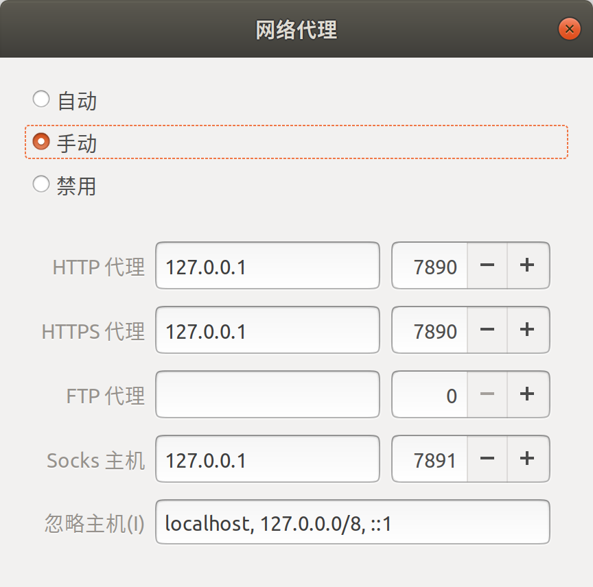

Clash
科学上网
Linux
详细步骤说明
到官方网站 https://github.com/Dreamacro/clash/releases/tag/v1.8.0 下载
clash-linux-amd64-v1.8.0.gz, 解压后得到clash-linux-amd64;重命名
1
2
3mv clash-linux-amd64 clash
chmod a+x clash
mkdir ~/.config/clashClash 正确运行首先需要一个
Country.mmdb的文件，这个是全球 ip 数据库文件，没有这个文件 clash 是无法运行的. 默认情况下执行 ./clash 也是可以得到，但是往往会因为网络原因下载不了, 因此可以从其他地方手动下载该文件.接下来就要准备机场提供的 clash 订阅的配置文件了，也就是
config.yaml文件，这个文件可以通过 clash for windows 客户端中的 profile 中保存下来. 我买的梯子直接提供了该文件的网址, 可以通过 wget 命令下载得到(其中的<url>替换为卖家提供的网址).1
wget -O config.yaml <url>
把
Country.mmdb和config.yaml移动到~/.config/clash/目录下.1
2mv Country.mmdb ~/.config/clash/
mv config.yaml ~/.config/clash/在 ubuntu 系统设置 -> 网络 -> 网络代理中配置
方法: 手动
http 代理: 127.0.0.1 7890
https 代理: 127.0.0.1 7890
socks 主机: 127.0.0.1 7891启动
1
./clash # 可以用 [-d <dir>]来指定参数文件的路径, 默认为 `~/.config/clash/`
打开网页 http://clash.razord.top/ 选择代理服务器即可.
简易操作
安装
以上关于可执行文件和配置文件的操作都被写到了setup.bash,update_config.bash,run_clash.bash三个脚本中, 安装时只需将 install_clash.zip(private) 下载到本地如果是
armv8平台 (树莓派 4B)，下载clash-linux-armv8-v1.8.0.gz替换clash-linux-amd64-v1.8.0.gz.1
wget https://github.com/Dreamacro/clash/releases/download/v1.8.0/clash-linux-armv8-v1.8.0.gz
然后运行如下指令进行安装, 并重启终端使
.bashrc生效.1
2chmod a+x setup.bash
./setup.bash如果确认安装成功了,clone 到本地的仓库可以直接删除.
更新代理服务器
如果需要更新代理服务器的配置文件config.yaml则新建终端执行如下指令1
update_config.bash
一般而言, 无需更新代理服务器, 只有当使用过程中发现大部分服务器都超时无法使用时可以尝试更新配置文件.
启动
每次要启动代理时, 运行如下指令, 并保持所在终端不被关闭:1
run_clash.bash
在设置中配置网络代理并设置为
手动.
Windows
- 访问 release 下载对应版本的安装包, 例如 Clash.for.Windows.Setup.0.20.11.exe, 双击安装即可.
- 汉化补丁: https://github.com/BoyceLig/Clash_Chinese_Patch/releases
- 官方文档: https://docs.cfw.lbyczf.com/